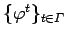
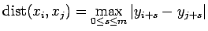
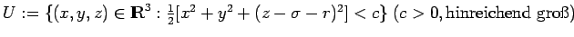

Inhalt Index DeskTop Bronstein

 Dynamische Systeme und Chaos Quantitative Beschreibung von Attraktoren Rekonstruktion der Dynamik aus Zeitreihen Rekonstruktionen mit prävalenten Eigenschaften
Dynamische Systeme und Chaos Quantitative Beschreibung von Attraktoren Rekonstruktion der Dynamik aus Zeitreihen Rekonstruktionen mit prävalenten Eigenschaften


Gegeben sei ein dynamisches System  mit , generiert durch bzw. . In U habe einen Attraktor  mit invariantem Wahrscheinlichkeitsmaß
mit invariantem Wahrscheinlichkeitsmaß  . Es seien eine Meßfunktion,
. Es seien eine Meßfunktion,  der Ordnungsparameter, die Zeitverschiebung und für
der Ordnungsparameter, die Zeitverschiebung und für
| (17.59) |
mit eine zum Orbit mit gemessene Zeitreihe der Ordnung m +1 in vorauseilenden Koordinaten. Für Vektoren xi und xj wird ihr Abstand durch  definiert. Bezeichnet N >m eine natürliche Zahl und  eine reelle Zahl, so heißt der Ausdruck
eine reelle Zahl, so heißt der Ausdruck
| (17.60) |
| Beispiel |
|
Das LORENZ-System (Lorenz-System) (s. LORENZ-System) gehört zu , wobei beispielsweise , gewählt werden kann. Offenbar ist der LORENZ-Attraktor |